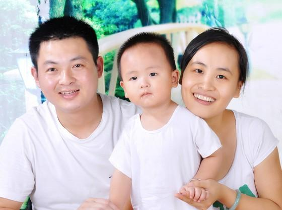
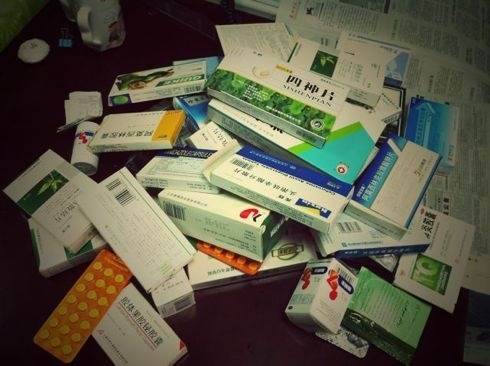
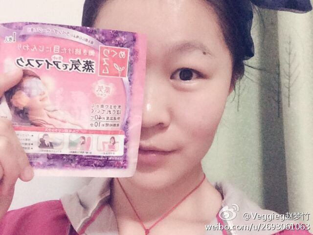

失眠是一种病，得治！！！
经常有朋友向我抱怨关闭网页后找不到我了，强烈建议先加我微信号
随着城市生活节奏的愈加疯狂，涌现了一大批半夜游魂，这就是我们可怜的患有失眠症的朋友。本来早睡早起日出而作日落而息的作息被城市闪烁的霓虹打破了，自然的生活习惯被扭曲，这其实是一种病态。 然而很多人却不以为然，以为自己年轻，无所谓。你可知道，一旦养成习惯，后果是多么可怕。
只有真正体会过失眠的人，才知道失眠的恐怖。
我是一名失眠症的重度患者，现年32岁。2013年开始到现在整整3年的时间，反复接受着失眠的困扰。
从2013年开始，因为夜不能寐，自己的生活，我的家庭，我的丈夫和孩子的生活都受到了严重的影响，更别说我的工作和事业。
这是我们幸福的一家三口。哈哈~~

我的失眠，具体是怎么开始的，我也不大记得了。大概是生完小孩刚刚重新开始工作的那段时间，因为工作压力大，时常工作到深夜。后来项目结束以后，发现自己已经养成了晚睡的习惯。
大概连续一个星期到了晚上就是困得连连打喝欠，一挨枕头就睡不着了，脑筋睡意全无，思绪万千，纷纷扰扰，乱七八糟。
从未经历这种状况的我不知如何是好，又懒得去看医生（不好的习惯，相信很多人和我一样）8月30日，就去小区外的药店买了平生从未接触过的安眠药——佐匹克隆。（事后想想，这药还不错的，）10粒26块。连吃了三天，每晚很快就睡了。快速入眠满强的，但是我第一次吃这种药，没有指导，心里非常非常害怕（想必不少人刚开始和我一样）第四天应该是个周五的晚上，稍稍恢复了一点元气的我，去逛街买了件心仪已久的衣服，很开心。回家居然在十点多自己入睡了，只是夜梦不断，质量很差（事后回想，是很好的信号，但是毫无经验的我，失去了这个机会）
期间和好友见面，自然说了一通失眠的事，她们都问我为什么事想不开呀，说真的，我没有啥事想不开呀，工作生活都还过得去，就是睡不着呀，这才是我眼下的头等大事。呵呵。所以晚上又睡不着了，再吃药。
几天后，我想这样不行呀，还是去看医生吧。就去家附近的社区医院，我想我是不是贫血呀，（贫乏的医学知识），验了血，血色素还挺高的。医生没说什么要紧的，开了14片安定，和两盒乌灵胶囊（治心肾不交症）。取药时，护士一再叮咛我“睡不着再吃药，能不吃就不吃，能少吃就少吃），
从此，我的恶梦生活开始了！！！
因为这句话，我不敢吃药了，每天晚上等着入睡，等啊等，熬到两点多，不行还是吃药，先吃一颗，不行，睡不着，再一颗，很害怕的睡着了。。。。。。
然而没有好转，只有加重，我的心脏开始出问题了，自己总能听见心跳的声音：咚！咚！咚！我想我一定又得其它的病了（笑，其实就是没有休息好）我对社区医院的水平产生了怀疑，开始了四处求医的征程。
然后去了大医院看中医内科（不知为何，我们多数人对这类病怎么一上来想到的就是中医呢？这个心态很值得研究一下）。医生摸了脉，说我身体太虚了，这我承认，我非常后悔前段时间自由生活的节食，让我雪上加霜。之后医生说不要吃安眠药，会上瘾。给我开了“活力苏口服液”，让我睡前喝两支，听我说心跳的厉害，让我去做心电图。当时我心想：我才不要做，我不可能有心脏病，我的父系母系家族没有一个得心脏病，我登4000多米的玉龙雪山也不用氧气瓶，怎么可能有心脏病呢。我不做。医生就给我又开了“松龄血脉康胶囊”。
回家接着吃药，医生说吃安眠药会上瘾哦，多可怕，不吃了，还是睡不着，我想我得了传说中的失眠症了.
这是我为了治疗失眠陆陆续续买过的一些药，现在看看真的好多啊！

于是我躺在床上，听见心狂跳，冷汗刷刷地往下流，我那浓密的头发一把一把的脱落，连续几天，我就快要崩溃了。家人也被我折腾地没办法。如同大多数人一样，我开始有了离开的想法。在黑夜里，每一块肌肉每一根神经都疲倦到极点，可是睡不着，痛苦啊，我真得不想活了。
这还只是我自己，老公被我烦得不行，有段时间为了配合我治疗，我想累了应该就能睡得安稳些，于是那段时间每晚老公睡前我都积极地索取。。。嗯 你们懂的。。。但是并没有什么效果
而小孩因为我一个人整天都是晕乎乎的，没有精神，根本没办法照顾好，于是孩子丈夫跟我越来越疏远。
幸好我是女的，我听医生说，失眠伤肝伤肾的，有些男的失眠严重导致那方面都不行了。
后来在经历了各种治疗无果之后，我果断地放弃了各种西药中药。治安眠的药价格可都不便宜。来来回回买药，检查什么的，花了我差不多2万了！说实话，如果能治好失眠，花这点钱，我也无所谓，因为身体和金钱，当然身体更重要。
停药后，失眠还是继续，每天晚上都很折磨。后来我妈给了我一个建议，让我请假回老家修养一段时间，因为老家是在农村，哪里的空气什么的要比城市要好些，并且也没有城市这么喧嚣，我想了想，决定回老家修养几个月。
在老家一段时间，失眠依然没有好转。不过在老家我也没有停止寻找失眠的法子，到处打听治疗失眠的办法（因为家里熟人比较多嘛！）。
一个偶然的机会，经过我一个朋友，认识了一个中医大夫，听说他们家族几代都是从医的。他跟我说，我这种情况不能盲目的用药，通过药物治疗，反而会适得其反，他让我每天去他诊所，他给我按摩眼部的几处穴位，这样坚持一段时间后，失眠的情况慢慢的得到了好转，在此期间，他给我推荐了一款失眠蒸汽眼罩，让我每天戴着这款蒸汽眼罩睡觉！很容易就入睡了

渐渐地，一个月左右的时间，我的失眠症竟然好了。
真的十分感谢我这位中医朋友，他仅仅只是通过穴位按摩和一款失眠蒸汽眼罩就治好了我的失眠。为了感谢他，我特意写下这篇文章，希望更多的失眠患者朋友可以看到。
如果你也是跟我一样被失眠痛苦折磨，那我留下我这位朋友的微信：pinpinwangluo。你可以加下他咨询一下，希望对你有所帮助，同时也给我朋友做一个宣传！